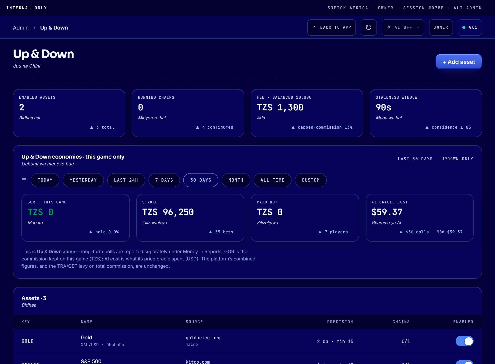
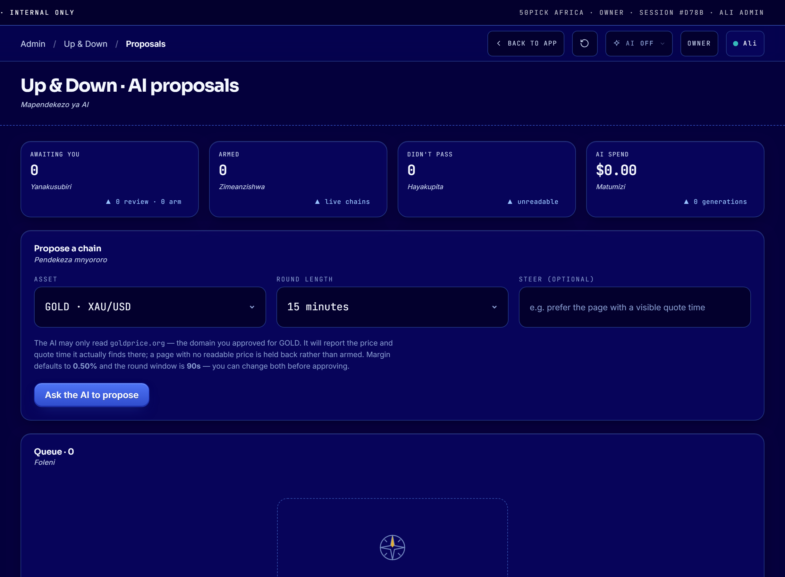
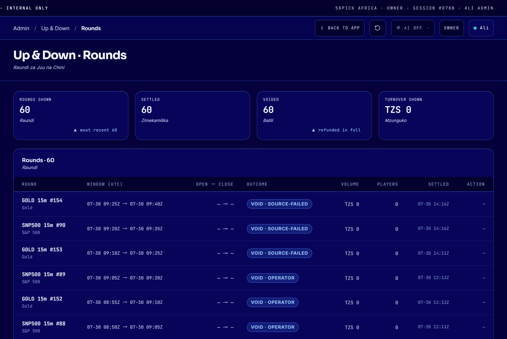

For 50pick staff who run the Up & Down game. No technical knowledge needed.
Every picture is the real screen.
1 · What the game is
A player bets whether a price — gold, silver, an index — will go UP or DOWN over
a short window: 5, 15 or 30 minutes. One window is a round.
1. Round opensWe read the price from an approved website and save it, with the link.
2. Players betThey pick UP or DOWN before the round closes.
3. Round closesWe read the price again — from the same link.
4. We payUP wins, DOWN wins, or nobody wins and everyone is refunded.
The price must move more than a small amount — the margin, normally 0.50% — for a side
to win. If it moves less, the round is VOID and every player gets their full stake
back. Nobody loses money on a round that barely moved.
KEY IDEAA round is settled against the exact web page it was
opened on. We save the link when the round opens and go back to that same link when it
closes. If the price cannot be confirmed, the round voids and refunds — we never guess a
price.
2 · Finding it in the admin
Up & Down is a separate game from normal polls, so it has its own section at the
bottom of the sidebar: UP & DOWN · JUU NA CHINI.
It has three screens:
Overview — what you trade and the timers that produce rounds.
AI proposals — ask the AI to suggest a new market, then approve it.
Rounds — every round that has run, and where you cancel a stuck one.
⚠️ You will not find Up & Down rounds under Markets → Curation queue.
That section is for long-form polls only.
3 · Overview — what you trade

Top row: how many assets are switched on, how many timers (chains) are running,
the fee on a balanced 10,000 pool, and the staleness window — how fresh a price must be
before we accept it. Middle: the money for this game only, over the period you pick.
Bottom: your assets, each with the website its price comes from.
Here Running chains is 0 — no rounds are being produced right now.
4 · Starting a new market
Option A — Let the AI propose it (easiest)

Pick the asset and the round length, then press Ask the AI to propose. The AI opens the
approved website and reports the price and time it actually found there. Note the line
under the form: it names the one website the AI is allowed to read for this asset — it cannot
go anywhere else.
Go to Up & Down → AI proposals.
Choose the asset and round length. Press Ask the AI to propose.
Look at the “What it found there” column.
A price and a time → good, the page can be used.
A dash (—) → the AI could not read a price there. This is normal
and the check doing its job. Try a different page or asset.
Press Review. Change the link, round length, margin or wording if you want. Then
Approve.
Press Arm and type ARM to confirm. The market starts at the next boundary.
Option B — Set it up yourself
Overview → + Add asset: name, symbol, and the web page the price comes from. That
website must already be approved under Sources & categories.
Switch the asset on (the toggle on the right of its row).
Add chain: choose the asset and 5, 15 or 30 minutes.
Press Start.
5 · Rounds — checking the game is healthy

Every round: when it opened and closed, the outcome, how much was staked, how many players,
and when it settled. In this picture every round shows VOID and TZS 0 — that is
a game that is not working: no price could be read, so every stake was refunded. A
healthy day shows a mix of UP and DOWN with real volume.
Your daily check — five minutes
Rounds — are recent rounds settling UP/DOWN, not a long run of VOID?
Overview → price readings — each asset should show a recent price and a recent time.
A dash means we cannot read it.
Chains are running, not paused — unless you paused them on purpose.
Void rate on each chain. Amber at 40% or more means that market needs attention.
Money — staked and paid out look sensible for the day.
REMEMBER A void is not a loss. Every player gets their full stake back
and we take no fee. A high void rate is a quality problem, not a money problem — but it
makes the game boring, so fix it.
6 · When something looks wrong
What you see
What it means
What to do
Price shows —; rounds keep voiding
We cannot read the price from that website.
Pause the chain. Tell the technical team. Players are safe — they are being refunded.
“Confirming price” for a long time
We are retrying the reading. By design.
Wait. If it never confirms, the round voids and refunds by itself.
A round is stuck holding player money
Something went wrong for that round.
Rounds → Void. Give a clear reason. Every stake is refunded in full.
Too many VOID results
The margin is too wide for how much that price moves.
Lower the margin on that chain (e.g. 0.50% → 0.30%). Only affects new rounds.
You cannot change an asset's web page
Rounds are still open on the old page.
Correct behaviour — those players were told the old page. Pause, let them finish, then change it.
Top bar shows AI OFF
Usually the AI key is missing — not that someone switched it off.
Tell the technical team. You can still review and start proposals already in the list.
7 · Five rules — never break these
1. Never change where a price comes from while a round is open. Those players were told
one source and the round must finish on it. The system will stop you — do not look for a way
around it.
2. Never approve a proposal with no price shown. A dash means the AI could not read that
page. Starting it anyway means rounds that cannot settle.
3. Never use the “Simulated” price feed on real money. It invents prices. It is for
testing only, and it asks you to type SIMULATED to confirm — that prompt is your
warning to stop.
4. Never announce a price we have not confirmed. If a screen shows a dash, that is the
honest answer. Do not fill it in from another website.
5. Always give a real reason when you void a round. It is a permanent record and the
company may have to explain it.
8 · Words you will see
Word
Meaning
Asset
A thing with a price — Gold, Silver, S&P 500.
Chain
One asset at one round length. “Gold 15m” is one chain. A chain produces rounds automatically.
Round
One 5, 15 or 30-minute window that players bet on.
Margin
How far the price must move for a side to win. Normally 0.50%.
VOID
No winner. Every stake refunded in full, no fee taken.
Boundary
The clock moment a round opens and the next begins — :00, :15, :30, :45.
Staleness window
How old a price may be and still be accepted. Normally 90 seconds.
Proposal
An AI suggestion for a new market. It does nothing until a person approves and arms it.
Arm
Turning an approved proposal into a live, running market.
IF IN DOUBTPause the chain. Pausing stops new rounds and lets
open ones finish normally — no player is left holding a bet. It is always safe, it never needs
technical help, and it is undone in one click.